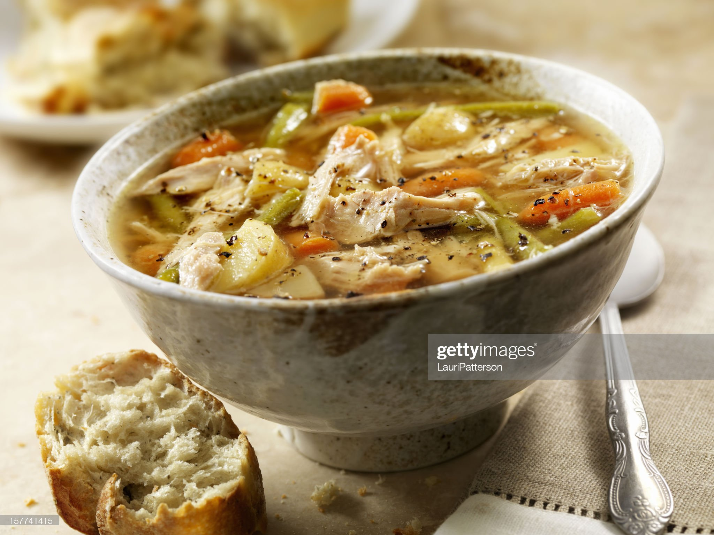

Favourite Recipes
Chicken Soup

The Best Chicken Soup You'll Ever Eat
The BEST chicken soup you’ll ever eat is the perfect recipe to make when you’re feeling sick. Packed with anti-inflammatory
ingredients like ginger, turmeric, garlic.
Ingredients
- 1 boneless chicken breast half, cooked and diced
- 2 cups water
- 2 carrots, chopped
- 1 zucchini, diced
- 1 clove garlic, minced
- ½ teaspoon chicken broth base
- Put cooked chicken meat and water
in a large pot and bring to a boil.
- Add the carrots, zucchini and garlic
and simmer all together for 5 to 10 minutes.
- Add the chicken broth and simmer
for an additional 5 minutes. Serve.